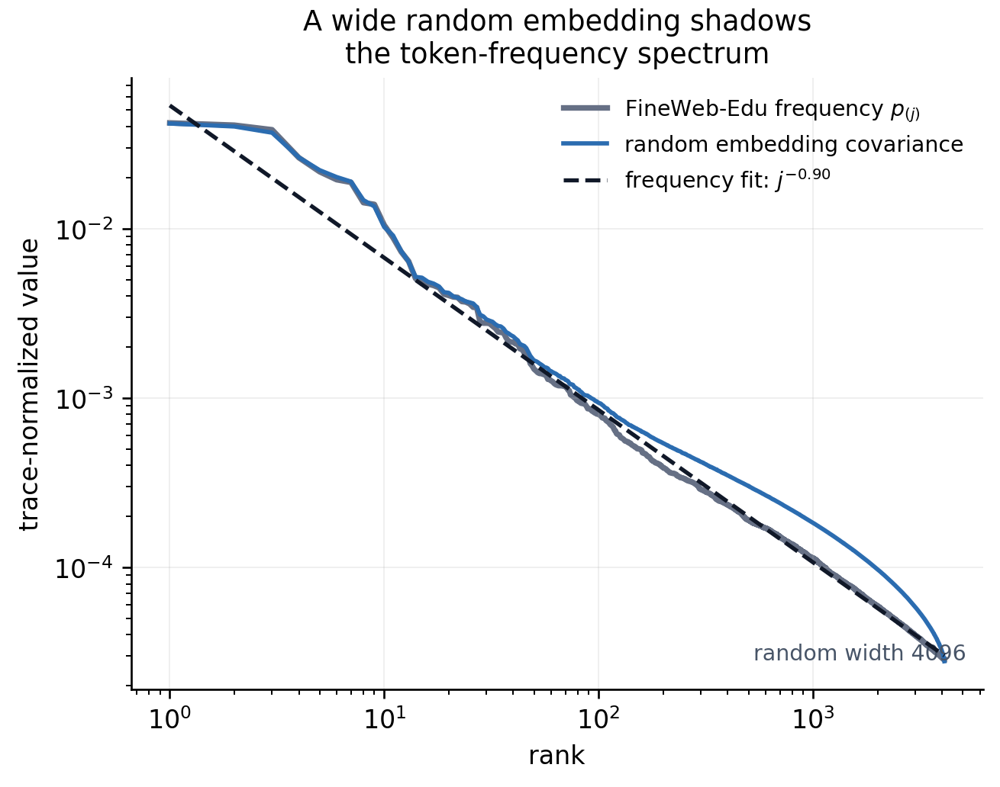
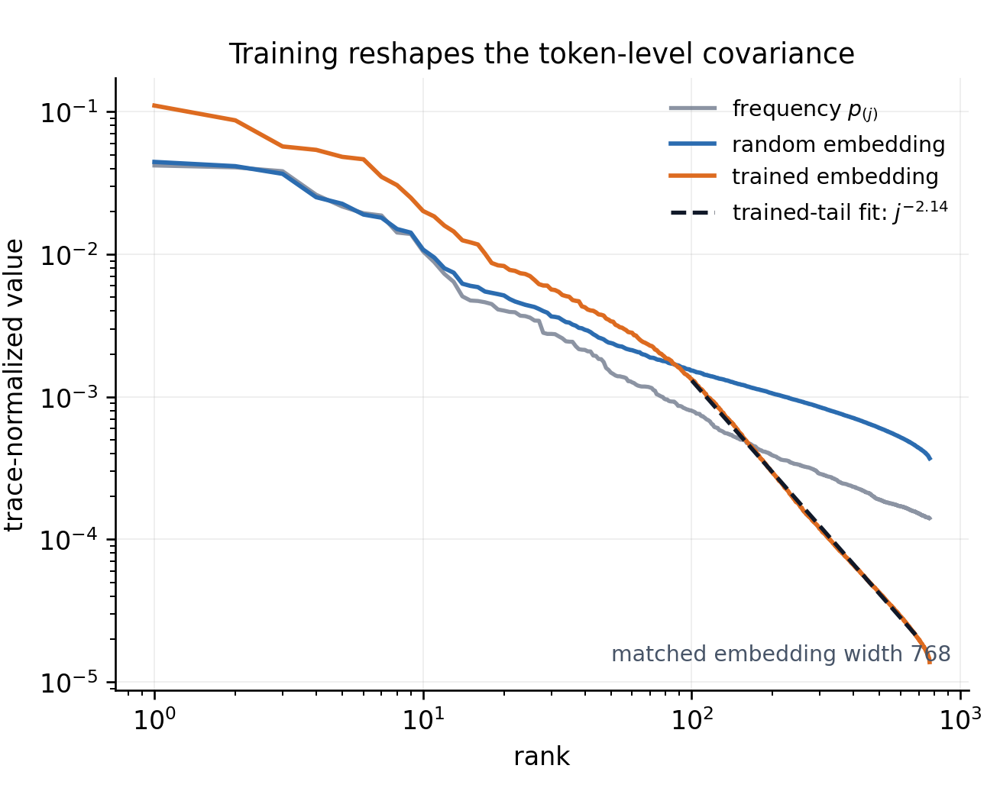
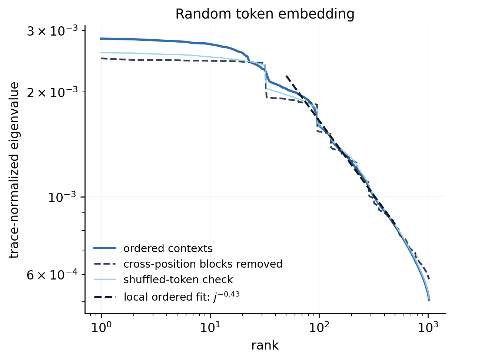
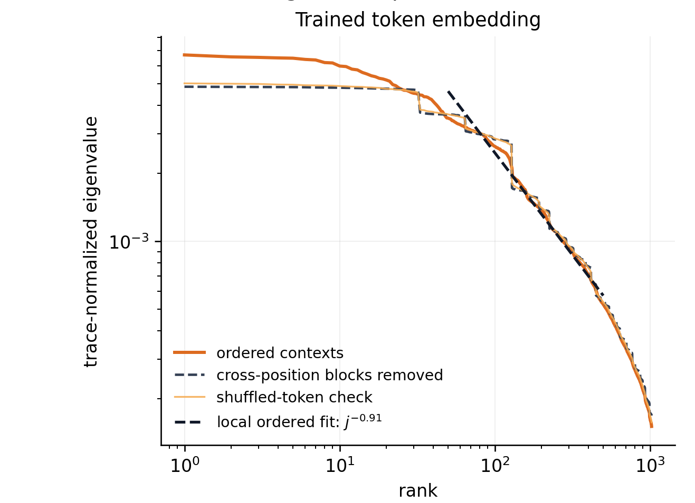
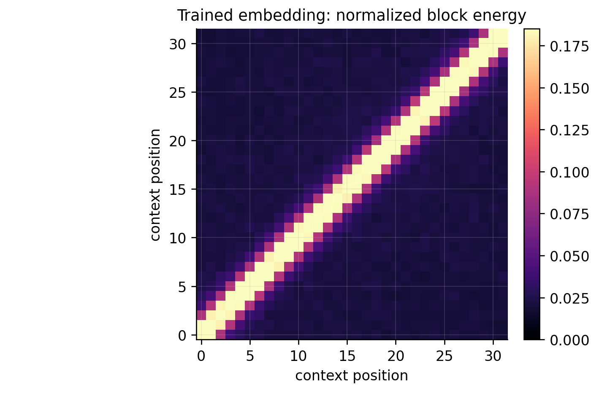
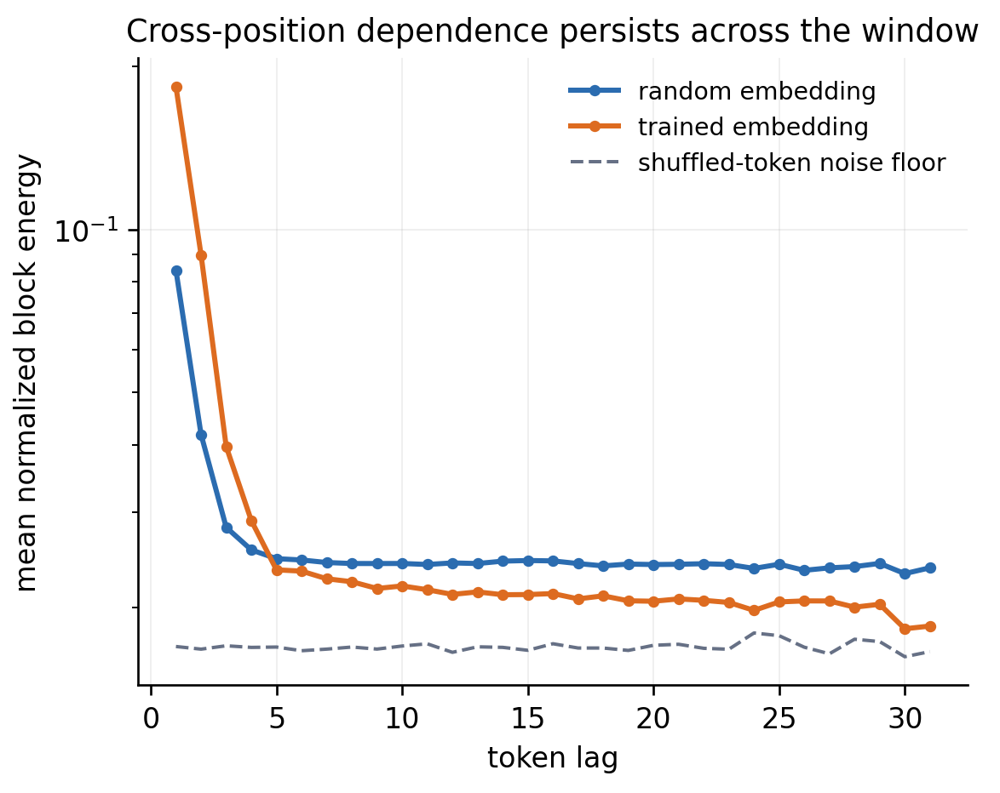
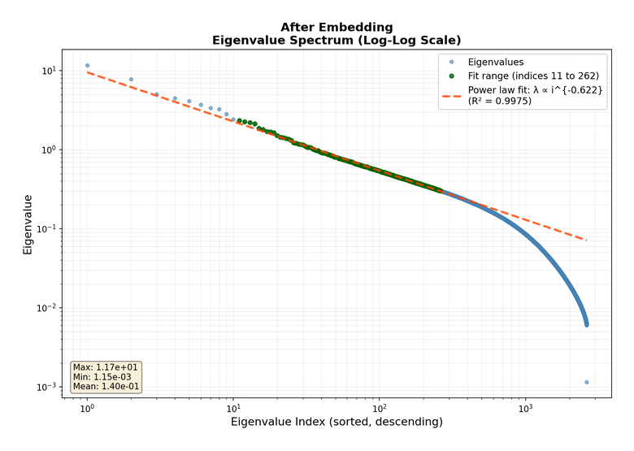
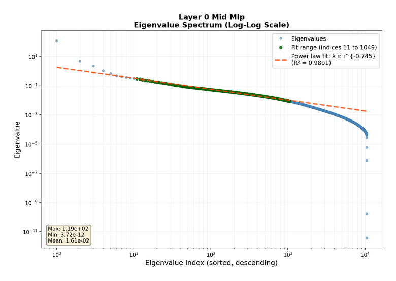
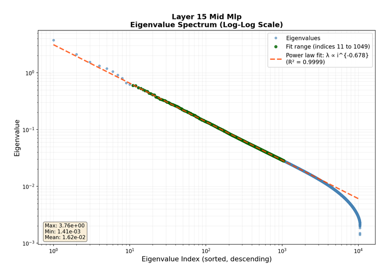
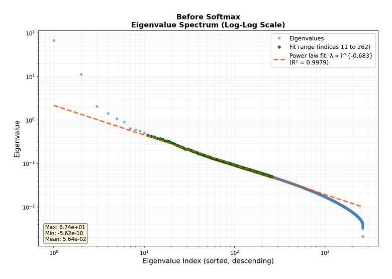

Power-Law Covariance
A simplifying structure for data and representations
A theory of every neural network says almost nothing
With enough parameters, neural networks can represent an enormous range of input–output relationships.
The data, target, architecture, and optimizer can all change the training story.
A useful theory begins by choosing a structure that constrains the problem.
Here the structure is the covariance eigenspectrum.
Covariance turns variability into geometry
For a random vector \(X\in\mathbb R^d\),
\[ \Sigma =\operatorname{Cov}(X) =\mathbb E[(X-\mu)\otimes(X-\mu)]. \]
For centered data,
\[ \Sigma=\mathbb E[X\otimes X]. \]
If \(u\) is a unit vector,
\[ u^\top\Sigma u =\operatorname{Var}\langle u,X\rangle. \]
- eigenvectors = principal directions;
- eigenvalues = variance in those directions.
Covariance is a linear statistic, but in high dimension it can still carry rich geometry. Later we will ask whether nonlinear network transformations weakly preserve that geometry.
A power law is a soft notion of dimension
\[ \lambda_j(\Sigma)\asymp j^{-\alpha} \qquad\Longleftrightarrow\qquad \log\lambda_j \approx C-\alpha\log j. \]
There is no sharp rank cutoff. Instead, count the directions visible above a resolution \(\varepsilon\):
\[ N(\varepsilon) =\#\{j:\lambda_j\geq\varepsilon\} \asymp \varepsilon^{-1/\alpha}. \]
Larger \(\alpha\)
Faster decay; fewer visible directions.
Smaller \(\alpha\)
Heavier tail; more relevant directions.
Example: Matérn kernels connect \(\alpha\) to smoothness and intrinsic dimension.
Image spectra survive random layers

The finite width changes the spectral cutoff much more than the fitted slope.
For language, first specify the random vector
| Random vector | What its covariance records |
|---|---|
| token embedding \(e_T\) | frequency together with embedding geometry |
| vectorized context \(C_L=\operatorname{vec}(e_{T_1},\ldots,e_{T_L})\) | token marginals together with cross-position dependence |
| activation \(h_{w,t}\) | anisotropy across feature channels |
\(d\) = embedding width; \(L\) = context length; \(m\) = hidden width.
These are different operators. A claim about one does not automatically transfer to another.
Zipf frequencies determine token covariance
For a one-hot token \(u_T\), with frequency vector \(p\),
\[ \operatorname{Cov}(u_T) =\operatorname{diag}(p)-pp^\top. \]
If \(p_{(1)}\geq p_{(2)}\geq\cdots\), rank-one interlacing gives
\[ p_{(j)} \geq \lambda_j\!\left(\operatorname{Cov}(u_T)\right) \geq p_{(j+1)}. \]
For an embedding matrix \(E\),
\[ \operatorname{Cov}(e_T) =E^\top\bigl(\operatorname{diag}(p)-pp^\top\bigr)E. \]
A wide random embedding sketches this covariance.
At initialization, frequency geometry survives the embedding

Held-out FineWeb-Edu tokens.
Training introduces a second spectral regime

The trained head is reshaped by semantic overlap between token embeddings.
Redundant directions produce a sharper terminal cutoff.
The crossover is a genuine two-power-law picture, not one global slope.
Piecewise power laws give a tractable refinement of a single-exponent model.
Context covariance exposes token dependence
For a length-\(L\) window, let
\[ C_L=\operatorname{vec}(e_{T_1}-\mu_1,\ldots,e_{T_L}-\mu_L). \]
Then
\[ \Sigma_{\mathrm{context}} = \begin{bmatrix} \Gamma_{11}&\cdots&\Gamma_{1L}\\ \vdots&\ddots&\vdots\\ \Gamma_{L1}&\cdots&\Gamma_{LL} \end{bmatrix}, \qquad \Gamma_{ab} =\mathbb E[(e_{T_a}-\mu_a)\otimes(e_{T_b}-\mu_b)]. \]
- \(\Gamma_{aa}\): token covariance at position \(a\);
- \(\Gamma_{ab}\), \(a\neq b\): cross-position dependence;
- independent tokens would make every off-diagonal block vanish.
Context spectra begin with a flatter phase

The initial flat regime gives way to a distinctly different spectral tail.
Training changes the context-spectrum crossover

The trained representation again shows more than one spectral regime.
Cross-position dependence forms a diagonal band

Nearby token positions remain strongly coupled after unigram statistics are held fixed.
Most cross-position dependence is local

The lag profile separates genuine local dependence from the shuffled-token noise floor.
Eigenvalues do not determine the representation
For any orthogonal matrix \(Q\),
\[ Q\Sigma Q^\top \]
has exactly the same eigenvalues as \(\Sigma\). A permutation matrix is one special case.
The basis is essential
Eigenvectors identify which combinations of features carry the variance.
RoPE is one example. Its position-dependent rotations preserve the full context-covariance spectrum while rotating the eigenvectors and block structure.
The embedding begins with an extended power-law regime

After the embedding, the fitted spectral exponent is approximately \(0.62\).
The power-law regime survives the first MLP

Inside layer 0, the fitted spectral exponent is approximately \(0.75\).
The same structure persists deep in the network

Inside layer 15, the fitted spectral exponent is approximately \(0.68\).
The final representation remains strongly anisotropic

Immediately before the softmax, the fitted spectral exponent is approximately \(0.68\).
Theory: weak preservation
A linear statistic must survive nonlinear transformations
Covariance is a linear summary of the data, but a network repeatedly applies nonlinear transformations.
For the spectrum to remain useful inside a network, we want weak preservation:
\[ \lambda_j(\Sigma)\asymp j^{-\alpha} \quad\Longrightarrow\quad \lambda_j(\Sigma_{\mathrm{new}}) =j^{-\alpha}\times\text{slowly varying factors}. \]
Constants, the eigenbasis, and logarithmic corrections may change while the polynomial exponent survives.
One-block stability can propagate through depth
For an MLP,
\[ H^{(0)}=X,\qquad Z^{(\ell)}=(W^{(\ell)})^\top H^{(\ell-1)},\qquad H^{(\ell)}=f_\ell(Z^{(\ell)}). \]
The layer-\(\ell\) activation covariance is \(\Sigma_\ell=\operatorname{Cov}(H^{(\ell)})\).
The question is whether
\[ \lambda_j(\Sigma_{\ell-1})\asymp j^{-\alpha} \quad\Longrightarrow\quad \lambda_j(\Sigma_\ell)\asymp j^{-\alpha}. \]
A uniform one-block statement propagates through finite depth by induction. The hard step is controlling one nonlinear transformation.
Random features isolate one nonlinear block
Freeze a Gaussian matrix \(W\) and study
\[ h(X)=f(W^\top X). \]
The population second-moment matrix is
\[ K_{f,W} =\mathbb E_X\!\left[ \frac1d f(W^\top X)f(W^\top X)^\top \right]. \]
Freezing \(W\) separates the representation question from the optimization of the final linear readout.
Maloney, Roberts, and Sully used this setting to identify approximate spectral preservation in a solvable scaling model (Maloney et al. 2022).
The exponent survives monomial random features
Theorem: power-law preservation for monomial random features
Let \(X\sim N(0,\Sigma)\) with \(\lambda_j(\Sigma)\asymp j^{-\alpha}\). Let \(W\) have independent Gaussian entries and let \(f(y)=y^p\). Then, with high probability over \(W\),
\[ \boxed{ \lambda_j(K_{f,W}) \asymp \left(\frac{\log^{p-1}(j+1)}{j}\right)^\alpha \,,\qquad 1\leq j\leq c\,\frac{d}{\log^{p+1}d} } \]
\(\textit{P.--Ke Liang Xiao--Yizhe Zhu (2026)}\): polynomial rate preserved; logarithmic correction added.
The phenomenon extends beyond the theorem

The theorem covers monomials. ReLU, tanh, and other activations show related behavior numerically—but not every activation preserves the same tail.
Preservation also appears beyond Gaussian inputs

Similar slopes across four input distributions suggest a broader universality phenomenon.
Log corrections mimic new exponents
For \(p=2\),
\[ \lambda_j \asymp \left(\frac{\log(j+1)}{j}\right)^\alpha. \]
The local log–log slope is
\[ \alpha_{\mathrm{local}}(j) =\alpha\left( 1-\frac{j}{(j+1)\log(j+1)} \right). \]
At \(j=3{,}000\),
\[ \alpha_{\mathrm{local}}\approx0.875\alpha. \]
Within \(5\%\) of \(\alpha\) only near
\[ j=e^{20}\approx 4.9\times10^8. \]
At realistic widths, the correction looks like a shifted fitted slope.
The proof is a tensor covariance argument
Center the activation to isolate its highest Gaussian chaos.
Lift into tensor space so the kernel becomes a Gram matrix.
Count tensor-product eigenvalues to obtain the logarithmic correction.
Estimate a covariance from finite width to transfer the population spectrum back to the random-feature matrix.
For the quadratic activation, every step is already visible in the second Wiener chaos.
Centering isolates the pure second chaos
For column \(w_a\) of \(W\), set
\[ g_a=w_a^\top X, \qquad q_a=\mathbb E_X[g_a^2]=w_a^\top\Sigma w_a. \]
The centered quadratic feature is
\[ :g_a^2: =g_a^2-q_a. \]
If \(G=W^\top\Sigma W\) and \(q=\operatorname{diag}(G)\), then
\[ K_{2,W}^{\mathrm{raw}} =\frac1dqq^\top+\frac2dG^{\odot2}, \qquad K_{2,W}^{\mathrm{chaos}} =\frac2dG^{\odot2}. \]
The two matrices differ by one rank-one term; interlacing preserves the tail.
Quadratic features live in symmetric tensor space
In an eigenbasis of \(\Sigma\), expanding \(:g_a^2:\) in the second-chaos basis gives
\[ \phi_a = \left( (\sqrt2\,\lambda_r w_{ra}^2)_r,\; (2\sqrt{\lambda_r\lambda_s}\,w_{ra}w_{sa})_{r<s} \right). \]
Orthogonality yields
\[ \mathbb E_X[:g_a^2::g_b^2:] =\langle\phi_a,\phi_b\rangle. \]
With \(\Phi=[\phi_1\ \cdots\ \phi_d]\) in a tensor space of dimension \(v(v+1)/2\),
\[ \boxed{ K_{2,W}^{\mathrm{chaos}} =\frac1d\Phi^\top\Phi } \]
Tensor eigenvalues are pair products
The principal population eigenvalues in tensor space are
\[ 4\lambda_r\lambda_s,\qquad r<s. \]
If \(\lambda_r=r^{-\alpha}\), then the number above \(\varepsilon\) is
\[ \begin{aligned} N_{\mathrm{off}}(\varepsilon) &=\#\{r<s:4\lambda_r\lambda_s\geq\varepsilon\}\\ &=\#\{r<s:rs\leq(4/\varepsilon)^{1/\alpha}\}. \end{aligned} \]
Thus the spectral counting problem is a lattice-point problem under a hyperbola.
The divisor count creates the logarithm
The divisor count gives
\[ \#\{r<s:rs\leq R\}\sim \frac12R\log R. \]
Hence \(j\asymp R\log R\), so
\[ \lambda_j\asymp \left(\frac{\log(j+1)}{j}\right)^\alpha. \]
Width becomes sample size in tensor space
The nonzero eigenvalues of
\[ \frac1d\Phi^\top\Phi \qquad\text{and}\qquad \widehat C_{\mathrm{chaos}} =\frac1d\Phi\Phi^\top =\frac1d\sum_{a=1}^d\phi_a\phi_a^\top \]
are identical.
The random-feature width \(d\) is the sample size in an empirical covariance-estimation problem for tensor features.
On a \(k\)-dimensional spectral head, the desired estimate is
\[ \left\| \frac1d\sum_{a=1}^d\xi_a\xi_a^\top-I_k \right\|\leq\delta. \]
The tensor features are heavy-tailed
Coordinates of \(\xi\) are products \(w_rw_s\). For a unit vector \(u\), Gaussian hypercontractivity gives
\[ \|\langle\xi,u\rangle\|_{L^q} \leq(q-1)\|\langle\xi,u\rangle\|_{L^2}, \qquad q\geq2. \]
This is sub-exponential, not sub-Gaussian, growth.
Large individual tensor-feature vectors can dominate the ordinary empirical covariance, so the clean \(d\asymp k\) sub-Gaussian theorem does not apply. The concentration step uses bounds for sums of heavy-tailed random matrices (Jirak et al. 2026).
For degree \(p\), the current argument gives a sharp range
\[ k_\star\asymp\frac{d}{\log^{p+1}d}; \qquad p=2:\quad k_\star\asymp\frac d{\log^3d}. \]
Two logarithms come from different mechanisms
Structural
\[ \lambda_j \asymp \left(\frac{\log j}{j}\right)^\alpha \]
Comes from counting pair products \(rs\leq R\).
It is already present in the population tensor spectrum.
Statistical
\[ k_\star \asymp \frac d{\log^3d} \]
Comes from estimating a covariance with heavy-tailed tensor samples.
It limits the current finite-width proof range.
The result identifies a mechanism, not a universal law
Established in the clean model
- Gaussian inputs;
- fresh Gaussian random weights;
- monomial activations;
- one frozen random-feature block.
Still open or model-dependent
- sharp preservation theorems for ReLU and tanh;
- trained and statistically dependent weights;
- normalization, residual connections, and finite-depth composition;
- full context covariance under self-attention.
The theorem explains the mechanism; the experiments show where it should extend.
Selected references
Elliot Paquette, Ke Liang Xiao, and Yizhe Zhu. Power-Law Spectrum of the Random Feature Model (2026). arXiv:2603.14578.
Moritz Jirak, Stanislav Minsker, Yiqiu Shen, and Martin Wahl. Concentration and Moment Inequalities for Sums of Independent Heavy-Tailed Random Matrices. Probability Theory and Related Fields 194 (2026), 1917–1944. doi:10.1007/s00440-025-01412-6.
Alexander Maloney, Daniel A. Roberts, and James Sully. A Solvable Model of Neural Scaling Laws (2022). arXiv:2210.16859.
The spectrum is a useful first coordinate system
Covariance eigenvalues quantify effective dimension.
The spectrum is not the whole story: eigenvectors encode important structural information about the data.
Real spectra can cross over between several power-law regimes.
Random monomial features preserve the polynomial exponent, up to a structural logarithmic correction.
Finite width turns the proof into heavy-tailed covariance estimation.
In Module 2, we will explore how spectra affect learning curves.
We will introduce how this spectral structure can affect scaling laws.